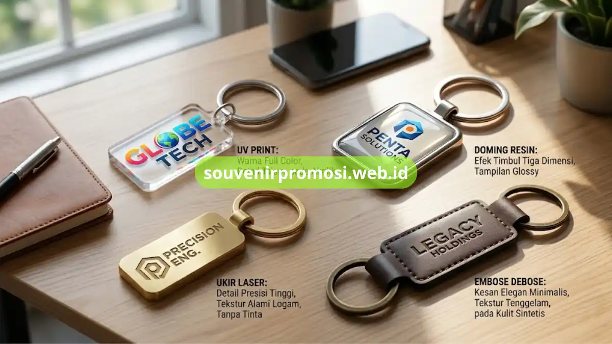
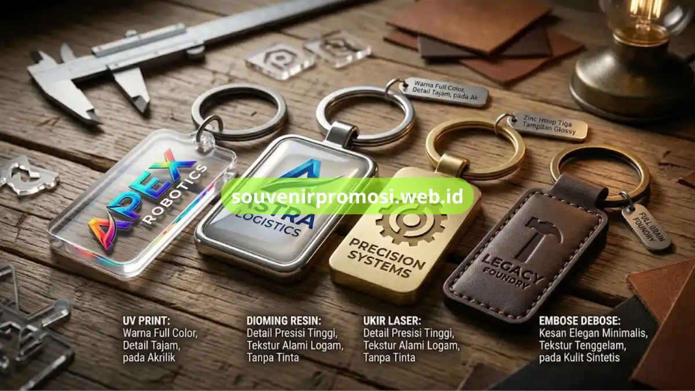

Teknik cetak logo gantungan kunci promosi adalah metode reproduksi desain pada permukaan bahan merchandise, meliputi UV print, doming resin, ukir laser, dan embose debose, yang masing-masing menghasilkan karakter visual dan tekstur berbeda pada logo perusahaan.
Poin Penting
- UV print menghasilkan cetak full color dengan detail tajam pada bahan akrilik.
- Doming resin memberi efek permukaan mengkilap dan timbul pada gantungan kunci karet atau logam.
- Ukir laser menciptakan detail presisi pada bahan logam tanpa tambahan warna tinta.
- Embose debose menghasilkan efek timbul pada kulit sintetis untuk kesan elegan minimalis.
- Pemilihan teknik cetak disesuaikan dengan jenis bahan dan kompleksitas desain logo.
Daftar Isi
Apa Itu Teknik UV Print pada Gantungan Kunci Akrilik?
Teknik UV print adalah metode cetak digital yang menyemprotkan tinta khusus langsung ke permukaan bahan lalu dikeringkan menggunakan sinar ultraviolet, menghasilkan warna tajam dan detail gradasi yang presisi. Teknik ini paling umum digunakan pada bahan akrilik karena mampu mereproduksi logo full color termasuk elemen desain yang rumit.
Hasil cetak UV print tahan terhadap goresan ringan dan tidak mudah pudar meski terkena paparan cahaya dalam penggunaan sehari-hari, menjadikannya pilihan utama untuk merchandise dengan desain logo berwarna-warni.
Bagaimana Kualitas Warna UV Print Dibanding Sablon Biasa?
UV print umumnya menghasilkan warna lebih tajam dan detail lebih presisi dibanding sablon manual, karena proses pencetakan dilakukan secara digital layer per layer sehingga gradasi warna logo dapat direproduksi lebih akurat.
Doming Resin untuk Efek Timbul dan Glossy
Doming resin adalah teknik pelapisan permukaan cetak dengan lapisan resin transparan yang menciptakan efek timbul tiga dimensi dan tampilan glossy menyerupai emblem. Teknik ini sering diterapkan pada gantungan kunci karet PVC maupun logam untuk memberikan kesan premium tanpa menambah biaya produksi secara signifikan.
Lapisan resin pada doming juga berfungsi melindungi cetakan logo dari goresan dan paparan air, sehingga cocok untuk merchandise yang digunakan dalam kondisi luar ruangan.
Apa Perbedaan Doming Resin dan UV Print?
Doming resin menambahkan lapisan tiga dimensi mengkilap di atas cetakan, sedangkan UV print menghasilkan cetakan datar dengan warna tajam tanpa efek timbul. Kombinasi keduanya kadang digunakan untuk memaksimalkan detail sekaligus tekstur visual pada gantungan kunci.

Ukir Laser untuk Detail Presisi pada Bahan Logam
Ukir laser adalah teknik pemotongan permukaan logam menggunakan sinar laser terarah untuk membentuk detail logo dengan presisi tinggi tanpa memerlukan tinta tambahan. Hasil ukiran memperlihatkan tekstur alami logam yang memberikan kesan elegan dan tahan lama karena tidak akan pudar seperti cetakan tinta.
Teknik ini ideal untuk logo dengan garis tipis atau tipografi detail yang membutuhkan akurasi tinggi pada permukaan logam kuningan maupun stainless steel.
Apakah Ukir Laser Bisa Dikombinasikan dengan Warna?
Ukir laser dapat dikombinasikan dengan pengisian warna enamel pada bagian cekungan hasil ukiran, sehingga logo tetap terlihat menonjol dengan sentuhan warna sesuai identitas brand perusahaan.
Embose Debose untuk Kesan Elegan pada Kulit Sintetis
Embose debose adalah teknik cetak timbul atau tenggelam pada permukaan kulit sintetis menggunakan cetakan logam bersuhu tinggi, menghasilkan tekstur logo tanpa tambahan warna tinta. Teknik ini memberikan kesan minimalis dan elegan yang sering dipilih untuk merchandise korporat kelas atas.
Hasil embose debose tahan lama karena tekstur terbentuk langsung dari perubahan struktur permukaan bahan, bukan lapisan cetak yang dapat terkelupas seiring waktu.
Bagaimana Memilih Teknik Cetak Sesuai Desain Logo Perusahaan?
Pemilihan teknik cetak logo gantungan kunci sebaiknya disesuaikan dengan kompleksitas warna, jenis bahan, dan kesan visual yang ingin ditampilkan pada identitas brand. Tim Souvenir Promosi dapat membantu merekomendasikan teknik cetak paling sesuai berdasarkan desain logo yang Anda siapkan.
Setiap teknik cetak logo gantungan kunci promosi, mulai dari UV print, doming resin, ukir laser, hingga embose debose, memberikan karakter visual berbeda yang memengaruhi kesan akhir merchandise perusahaan. Memahami teknik ini membantu Anda menentukan hasil cetak yang paling sesuai dengan identitas brand.
Konsultasikan desain logo perusahaan Anda dan dapatkan rekomendasi teknik cetak terbaik langsung dari tim Souvenir Promosi melalui souvenirpromosi.web.id, atau hubungi kami untuk mulai proses produksi merchandise Anda.